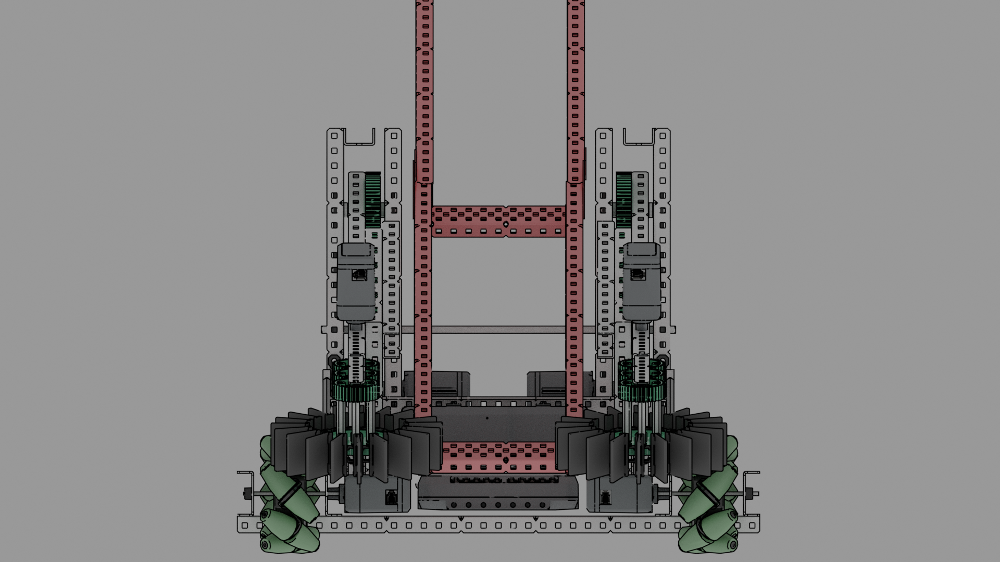
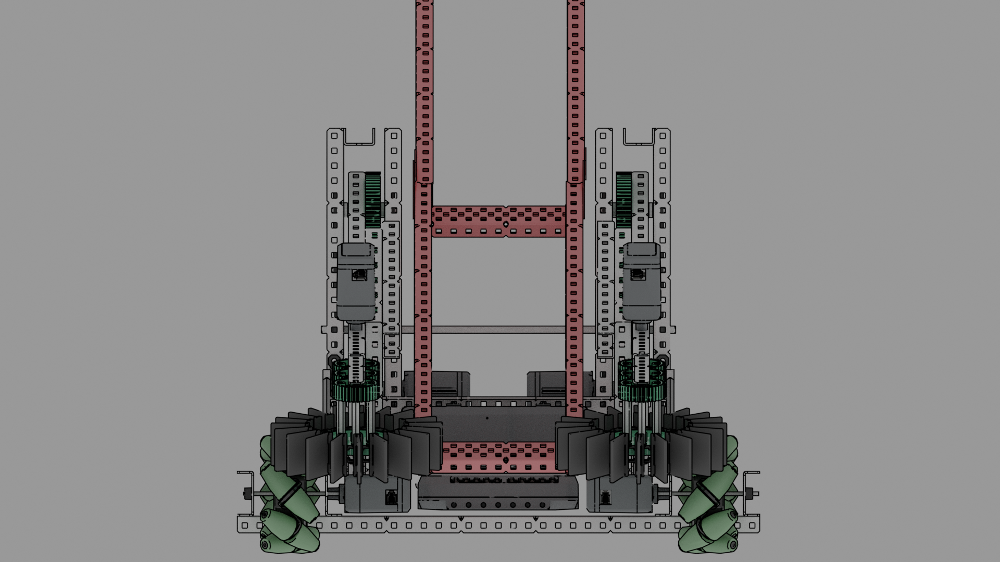

April Progress Entries¶
4/27/20¶
Attendance: ☐ Brody, ☑ Derek, ☐ Dylan, ☐ Ian, ☐ Jack¶
Today we started generating ideas for change up. We created design matrices to compare many different drive bases and robot designs. We decided to continue developing 2 of the drive bases in CAD so we could work with them. We also started to come up with basic strategies for both skills and competition matches. These strategies helped make a decision on what type of robot we wanted Started to work on 2 different drives bases that we wanted to compare together. One is a direct-drive mecanum base that is 6 sections long, and 7 sections wide. We had to make this base 7 section wide to accommodate the wide mecanum wheels and the future tray that will go in the drive base. The other drive base is an omni wheel drive base geared 32:84 with 600 rpm motors for an output speed of 257 rpm, we are using this high speed to make up for the lack of strafing that the mecanum drive base has. This base is is 6 sections wide and 7 sections long, which is a better sized drive base for maneuverability but might cause some problems with the future attachments such as tray and intakes
257 RPM Omni Drive Base¶


4/28/20¶
Attendance: ☐ Brody, ☑ Derek, ☐ Dylan, ☐ Ian, ☐ Jack¶
Today was mostly spent in CAD as we continued to improve the mecanum drive base. We added a 6 bar lift to the back of the drive base powered by 2 motors and running at a 32:64 gear ratio. We do not know what motor speed this motor will be running at because we do not have a physical robot to test different speeds on. We went with a six bar lift because we can mount the lift a lot lower on the robot compared to a 4 bar lift, but it will still reach the 18.3in goals to score in.


4/29/20¶
Attendance: ☐ Brody, ☑ Derek, ☐ Dylan, ☐ Ian, ☐ Jack¶
Today we completed the CAD of the mecanum drive base robot. We connected a simple 2 stage tray to the 6 bar lift that will unfold using rubber band tension and the force of a ball moving up the tray. The tray can currently hold 6 balls, we believe there is no reason to hold more than six because of the limited number of balls on the feild and how each goal can hold 3 balls. When holding 6 balls the last ball is only half in the tray and the first ball is in the intakes We also added intakes to the 6 bar, these will passively unfold at the start of a match by falling down on a hinge using gravity. The intakes are currently very close to each other at 6.5in. This might cause a problem when intakes balls when we build this robot but because we only have a CAD model we can not test this. The intakes are sticking out of the robot ~2.5in so when we go to de-score balls from the bottom of goals the robot does not interfere with the intakes and block it from reaching the balls Today we also worked on the 257rpm omni drive base. We added a third middle wheel to the drive base, powered off the back motor. This will improve weight distribution across all the wheels and also allow us to “lock” the center wheel meaning we can not be pushed. We would lock the wheel by putting screws in the omnis rollers so it can not move side to side We also started to connect a six bar lift to the robot, we are having problems finding a way to connect the six bar in a way that does not interfere with the center wheel, or any of the other wheels. Because of this the six bar is not connected to the robot fully. The main problem is that unlike the mecanum drive base, this drive base has the six bar lift mounted over the wheels because of its width. In the future if we want to continue using this drive base we need to either move the 6 bar inward away from the wheels, or make the drive base wide.
 



4/30/20¶
Attendance: ☐ Brody, ☑ Derek, ☐ Dylan, ☐ Ian, ☑ Jack¶
Today we worked on only the 257rpm omni drive base as the mecanum was completed the previous day. We did find a way to mount the full six bar onto the drive base but it is a lot higher than we would like. Because of this we have not yet put on intakes or a full tray. The tray that we did connect is almost a good place but is still too high. This height is also a problem for the intakes as the intakes have to fit inside the bottom of the goals to descore balls. Because of these current issues we will most likely be redesigning this drive base to more closely match the mecanum drive base in the future Today we worked on getting pseudocode for the robot. This included creating classes for the critical functions of the robot, and starting to program odometry. We looked at 7K’s code as an example as they were the number one skills team for tower takeover. We ended up talking with them to get a better understanding of how odometry worked. Because we are now using odometry in code, we need to add position trackers to the robot, for this we are using 2.5in omni wheels that have been cut in half to save space, connected to hollowed out c-channels with optical shaft encoders on them. The c channels are attached to the robot at only one point so they are free to rotate, we will be using this to our advantage so we can use a rubber band to tension the trackers to the ground. Below is a list of all the classes that we came up with that we will begin working to create.
class Chassis{}; //Controls all drive base mvmt including driver control mvmt.
class Intake{}; //Controls all intakes including driver control mvmt and auton mvmt.
class Display{}; //Controls all GUI related functions.
class Auton{}; //Controls the autonomous routines we run, both skills and autonomous phase.